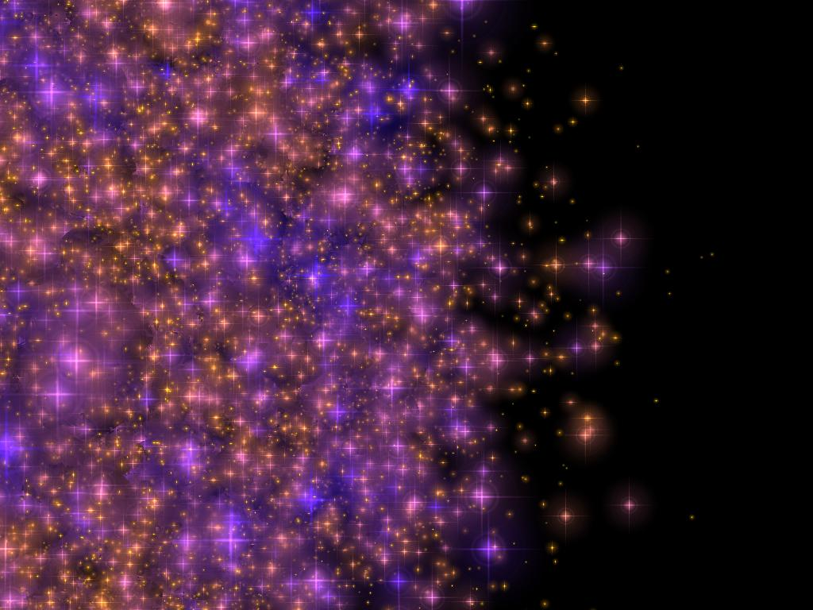

Evolution of a large star cluster near the Galactic center

{kind=link}
{kind=link}
{kind=link}
We are looking from a distance of 17.5pc face-on to the plane of the Galactic center (middle of each image). The stars forming the Galactic bulge are removed for clarity; the visible stars are those that were born in a dense star cluster at a distance of 8pc from the Galactic center. The first revolution around the Galactic center (counterclockwise) takes about 0.3 million year. The simulated star cluster initially contains 65536 stars (drawn from a Scalo mass function between 0.3 and 100 solar masses). The images represent the cluster at zero age, 0.3 million years (after about one revolution around the Galactic center), 1.2 and 2.1 million years. The cluster has an initial diameter of 0.25pc. The colors and sizes of the stars represent their effective temperature and apparent luminosity. 
{kind=link}
In the initial image (top left) the internal structure of the cluster is obscured by the sheer number of stars it contains. The image at right gives a cross-sectional view of part of the cluster, making the density profile and internal structure more evident. The cluster center is at left center of the image.
By 2.1Myr (final image at top) the cluster has spiraled in to a distance of 5pc from the Galactic center. On its way in, the cluster has lost about 36% of its total mass and almost 41% of its stars. This indicates that preferentially the lower mass stars are lost from the clusters. These stars are visible in the image as the 'spiral' arms. At this moment the cluster is not yet in a state of core collapse (the core radius is 0.077pc), although the virial radius has expanded to about 0.3 pc due to the tidal effect of the Galactic center.
A total of four collisions have occurred in the cluster center, resulting in the formation of two massive (178 and 162 solar mass) objects, which are currently members of a close binary system with a 7.3 AU orbital separation. These two stars will soon merge after a semi-stable phase of mass transfer. This binary consisting of the two supermassive main-sequence stars is not visible on the image, as it is hidden near the cluster center.
This calculation is performed on the GRAPE-6 at Tokyo University using the starlab toolset. The trajectories of the stars are calculated with kira and the evolution of the stars was computed with SeBa (for details see Portegies Zwart, Makino, McMillan and Hut 2002, ApJ in press or the more theoretical paper by Portegies Zwart and McMillan ApJ submitted).